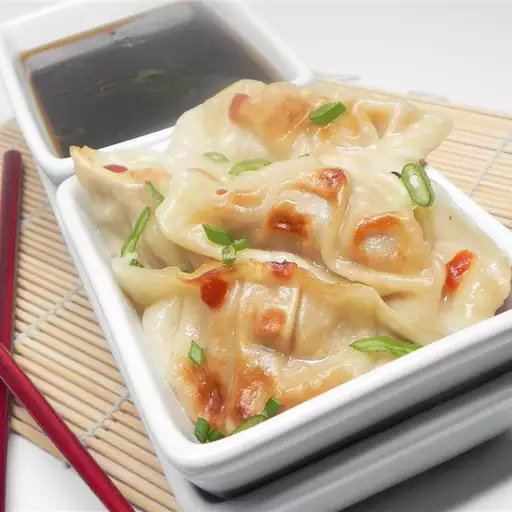

Gyoza (Potstickers)

Description
Gyoza are the Japanese version of jiaozi, or Chinese potstickers. This version is pan-fried but they work well deep-fried or steamed too.
Ingredients
Potstickers:
- ½ pound ground pork
- ½ head napa cabbage, shredded
- 3 green onions, thinly sliced
- 1 large egg
- 1 (2 inch) piece fresh ginger, grated
- 1 small clove garlic, minced
- 1 tablespoon soy sauce
- 1 teaspoon Sriracha sauce, or more to taste
- ¼ teaspoon sesame oil
- 30 gyoza wrappers, or as needed
- 1 tablespoon vegetable oil, or as needed
- 1 cup water, divided
Dipping Sauce:
- 2 tablespoons soy sauce
- 2 tablespoons seasoned rice vinegar
- 1 ½ teaspoons sesame oil
- 1 dash Sriracha sauce, or to taste
Steps
- Prepare the potstickers: Combine ground pork, napa cabbage, green onions, egg, ginger, garlic, soy sauce, Sriracha, and sesame oil in a bowl.
- Arrange gyoza wrappers on a flat work surface. Place 1 teaspoon of pork mixture in the middle of each wrapper. Wet edges with your finger or a brush. Fold up sides to form a semicircle; pinch edges to seal.
- Heat oil in a heavy skillet over medium-high heat. Add 12 to 15 gyoza to the skillet. Cook until golden brown on the bottom, about 2 minutes. Pour in 1/2 cup water; cover and cook until water is absorbed, 5 to 7 minutes. Transfer gyoza to a plate. Repeat with remaining gyoza.
- Make the dipping sauce: Mix soy sauce, rice vinegar, sesame oil, and Sriracha together. Serve dipping side alongside gyoza.
Additional Tips
- To make hanetsuki gyoza (crispy wing gyoza), which is famous in Japan, add 1 1/2 teaspoons to 1 tablespoon flour to the water before adding to the skillet in Step 3.
- You can substitute 3 garlic chives for the greens onions and garlic clove if desired.
- The sauce ratio is 1 part soy sauce: 1 part seasoned rice vinegar: 1/4 part sesame oil, plus Sriracha sauce to taste.